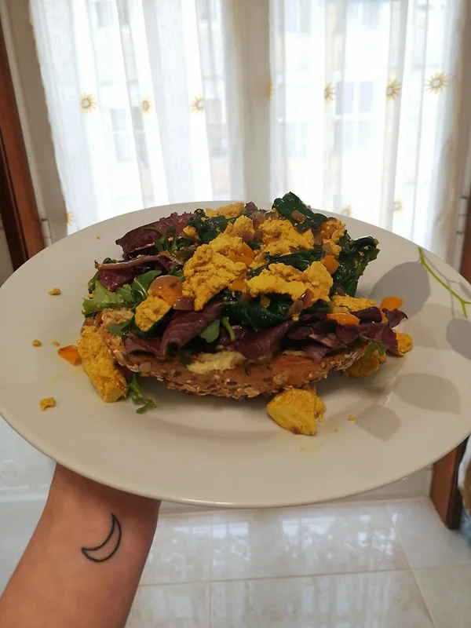

"Ovos Mexidos"
Tempo de preparação
7min
Horas de Cozimento
15min
Tempo Total
22min
Porções
2

Ingredientes
- 1 cebola roxa média
- 4 dentes de alho
- 1 pimento laranja pequeno
- 2 molhos grandes de espinafres
- pimenta preta q.b
- alho em pó q.b
- sal q.b
- 200g de tofu firme
- molho de soja q.b
- açafrão q.b
Instruções
- Desfaça o tofu com as mãos para dentro de uma taça, tempere com molho de soja, cúrcuma e deixe marinar enquanto faz o refogado.
- Numa frigideira adicione a cebola, o alho picado e o azeite, e deixe refogar até estes ficarem praticamente transparentes. Junte o pimento laranja e refogue por mais uns 3 minutos.
- Quando os alimentos estiverem translúcidos junte os espinafres ao preparado e tempere com sal;
- Numa frigideira antiaderente à parte, frite o tofu marinado até ficar dourado e com a cor amarela que o açafrão lhe dá.
- Quando os espinafres estiverem cozidos e encolhidos envolva o tofu mexido nos alimentos, adicione a pimenta preta, o alho em pó e envolva bem.
- Acompanhe este tofu mexido num pão de sementes torrado com uma base de hummus à sua escolha, uma mistura de alfaces e rúcula e está pronto!